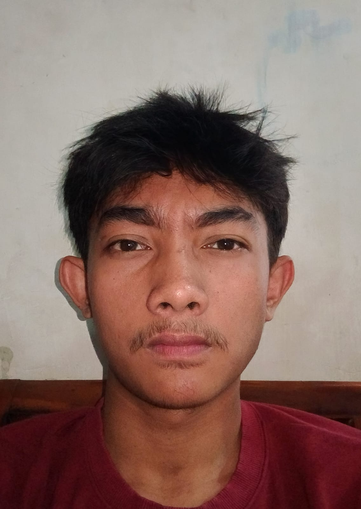

Halo, saya
(Adrian Franciscus Caferius Sidauruk) (Profesi / Peminatan, contoh: Web Designer & Front-End Developer)
(Saya menyukai hal yang berkaitan dengan pemrograman, dan hal yang paling berkesan bagi saya adalah menganalisis sebuah masalah atau data.)

(Semester ganjil) · (Sistem Informasi)
Tentang saya
Identitas dan latar belakang singkat.
- Nama lengkap
- (Adrian Franciscus Caferius Sidauruk)
- NIM
- (123456789)
- Kelas Reguler
- A0215
- Fakultas / Program studi
- Fakultas Teknologi dan Informatika / (Sistem Informasi)
- Kampus
- (UNIBI), Bandung
- Tempat, tanggal lahir
- (Bandung), (5/10/2006)
(Saya tertarik dengan desain web karena tau bagaimana proses pembuatan sebuah web)
(Minaat saya dalam sebenarnya dalam menganalisis sebuah system atau data, dan mengatasi masalah tersebut.)
- (UNIBI) (2025) - sekarang · (Sistem Informasi)
- (SMAK Dago) (2022) - (2025) · (IPS)
- (OSIS, HIMASI) (2024-2025, 2026-2027) · (Bela negara, Kastrat)
Keahlian
Kemampuan yang saya pakai untuk membangun halaman web.
Desain
Peralatan
Aplikasi yang biasa saya gunakan sehari-hari:
- (VS Code)
- (Git & GitHub)
- (Figma)
- (Chrome DevTools)
- (Tool Lain)
Proyek
Tiga hasil kerja yang paling mewakili kemampuan saya.
(Judul Proyek 1)
(Judul Proyek 2)
(Judul Proyek 3)
Kontak
Ada pertanyaan atau ajakan kerja sama? Kirim pesan lewat formulir atau hubungi langsung.
- Email(adrianfcs1579@gmail.com)
- WhatsApp(0890-9000-1111)
- Instagram(@adrian)
- GitHub(github.com/)
- Alamat(Alamat / Kota), Bandung